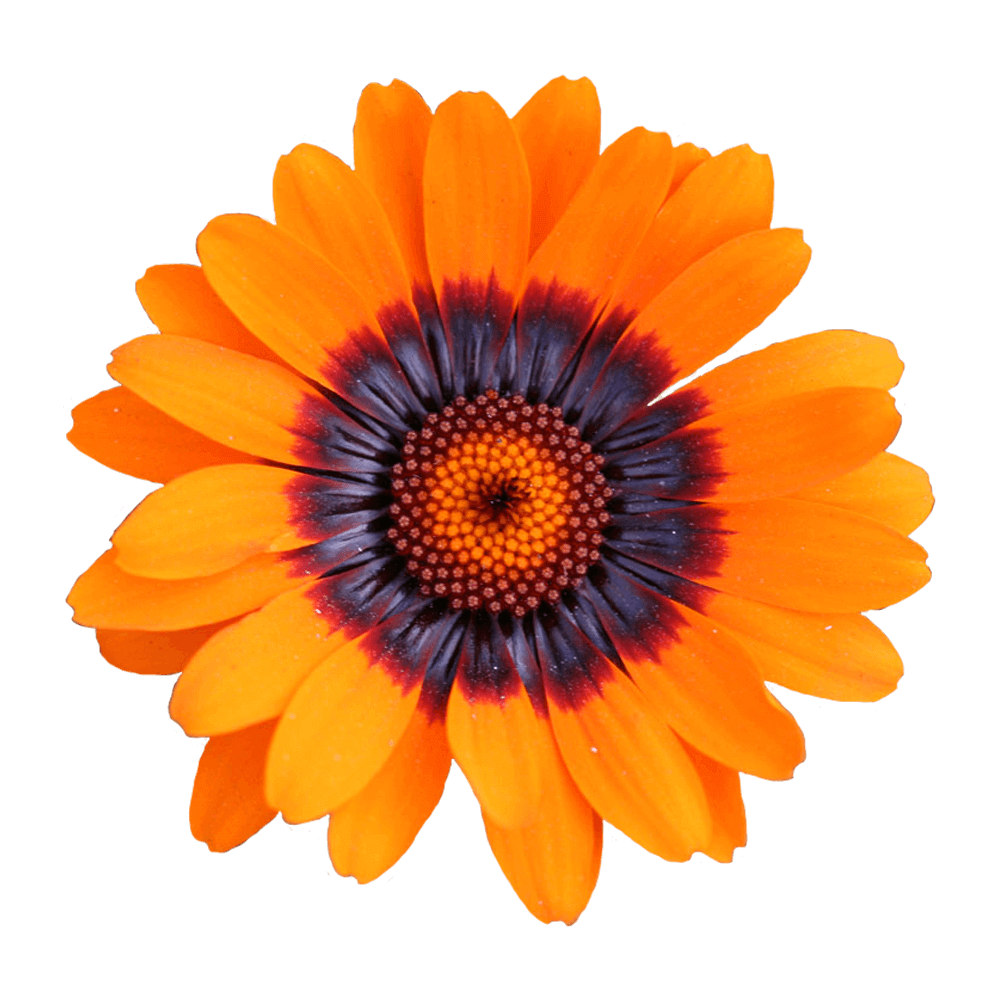

Unna has a soft look that is expressed through delicated serifs and strong stems, thus accentuating the typical neoclassical vertical texture. The type designer, Jorge de Buen, was inspired to name this design with the surname of his mother.
Font available from Google Fonts.
Ursinia is a beautiful, spring-flowering annual, with large, orange-yellow daisy flowers, with dark rings around their centres and delicate lacy foliage. The Ursinia is also know as the Orange African Daisy. Ursinia is popular for its daisy-like, showy flowers that bloom all season long.
Research shows that Ursinia flowers use a trick of physics, an optical effect to attract the pollinators such as bees. Bees have a preference to the colour blue, but it’s hard for plants to make that colour in their petals so they produce ethereal halos of blue light around their petals, visible to bees.
Ursinia is a symbol of innocent love.